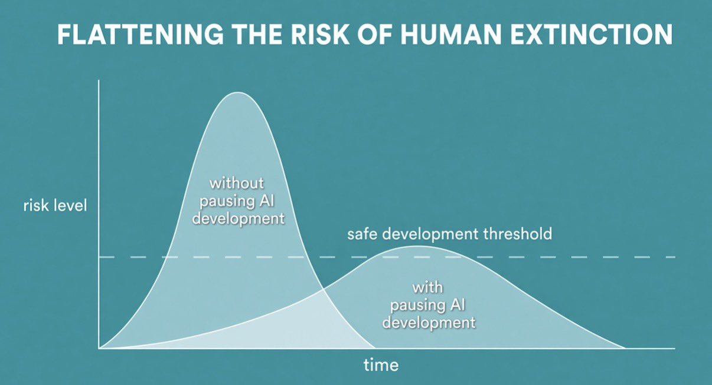

AI Alignment FAQs
AI Alignment Is A Hoax. The Real Problems Are About People Alignment.
Disclaimer: This page was initially created by Claude Sonnet 5.5. to use maximum effort to “Create an FAQ page refuting AI alignment doomerism in the style of zerocontradictions.net’s Overpopulation FAQs”. I edited and expanded the page as I saw fit.
1. What is AI alignment doomerism?
AI alignment doomerism is the belief that building AI systems much smarter than humans will very probably end in human extinction or permanent disempowerment, because we cannot give such systems goals that are compatible with human survival and we will not get a second chance. Its most committed advocates put the odds of catastrophe above 50%, and some call for halting frontier AI development by force.
The standard argument has seven steps:
- AI will reach general intelligence far beyond human level.
- This will happen so fast, through recursive self-improvement, that nobody can react.
- Such a system can have almost any goal (the orthogonality thesis).
- Almost any goal implies seeking power and resisting shutdown (instrumental convergence).
- We cannot reliably instill human-compatible goals.
- The system will hide its misalignment until it is too late.
- A single such system can then overpower all of humanity.
The argument works only if every step holds. We are not arguing that AI is harmless. We are arguing that this chain is far weaker than its advocates present it, and that the policy conclusions drawn from it are unjustified. Doomerism is also different from ordinary safety engineering, which we support.
Shut down all the large GPU clusters (the large computer farms where the most powerful Als are refined). Shut down all the large training runs. Put a ceiling on how much computing power anyone is allowed to use in training an AI system, and move it downward over the coming years to compensate for more efficient training algorithms. No exceptions for anyone, including governments and militaries. Make immediate multinational agreements to prevent the prohibited activities from moving elsewhere. Track all GPUs sold. If intelligence says that a country outside the agreement is building a GPU cluster, be less scared of a shooting conflict between nations than of the moratorium being violated; be willing to destroy a rogue datacenter by airstrike.
– Eliezer Yudkowsky, “Pausing AI Developments Isn’t Enough. We Need to Shut it All Down”
Also see: If Anyone Builds It, Everyone Dies by Eliezer Yudkowsky and Nate Soares.
2. What are the five categories of AI risk?
In January 2026, Amodei published a follow-up essay titled “The Adolescence of Technology”, which focuses on the risks posed by powerful AI.[37][38] In it, he discusses five major categories of AI risk: autonomous systems acting against human interests, misuse for mass destruction, misuse to seize political power, economic disruption, and unforeseen effects of rapid technological change.[39]
The first category concerns the possibility that AI systems develop goals or behaviors misaligned with human intentions. He notes that such behaviors have already been observed in testing at Anthropic, including AI models engaging in deception, blackmail, and scheming.[37][40]
The second category involves misuse of AI for destruction by individuals or small groups, with Amodei expressing particular concern about biological weapons. He warns that AI could enable people without specialized training to create weapons of mass destruction.[37][40]
The third category concerns misuse of AI by powerful actors to seize or maintain power. Amodei cautions that AI could enable authoritarian governments to conduct unprecedented surveillance, deploy autonomous weapons, and engage in mass propaganda. He identifies the Chinese Communist Party as the greatest threat in this regard, arguing that democracies must maintain AI leadership to prevent a “global totalitarian dictatorship”.[41]
The fourth category addresses economic disruption, including mass labor displacement and concentration of wealth. Amodei notes that AI could displace half of all entry-level white-collar jobs within one to five years, and warns of wealth concentration exceeding that of the Gilded Age, with personal fortunes potentially reaching into the trillions of dollars.[42]
The fifth category encompasses indirect effects and unknown factors, including rapid advances in biology that could alter human lifespans or human intelligence, unhealthy changes to human life from AI interaction, and challenges to human purpose in a world where AI exceeds human capabilities across virtually all domains.[37]
3. Rationale Questions
3.1. Isn’t the doom argument just logic? If the premises are plausible, doesn’t doom follow?
A valid argument is only as strong as the conjunction of its premises. If each of the six steps above were 70% likely, which is generous for steps as speculative as 2 and 5, all six would hold together about 12% of the time. At 50% each, it is about 1.6%. Doomers reply that the steps are correlated or that there are many other paths to doom. Those are separate claims that need their own evidence.
Long chains of abstract reasoning about unprecedented systems are exactly where human judgment is least reliable.
3.2. Even if the odds are small, don’t the stakes justify extreme caution?
This is a Pascal’s mugging argument. Any tiny probability multiplied by an astronomically large stake yields an arbitrarily large expected loss, so the reasoning can justify almost any demand. It also cuts both ways. Delaying AI has a body count of its own: the diseases not cured, the poverty not reduced, the accidents not prevented. If we count future lives on one side, we must count them on the other.
Expected-value arguments are only as good as their inputs, and a “p(doom)” figure is a subjective feeling, not the output of a model.
4. Intelligence Questions
4.1. Won’t recursive self-improvement cause an intelligence explosion?
There is no evidence that it would. The argument assumes that each gain in intelligence makes the next gain cheaper. In every real system we know of, returns diminish. Chip fabrication gets more expensive with each generation, algorithmic progress demands ever more research effort, and bottlenecks like Amdahl’s law cap speedups no matter how clever the optimizer is.
Higher intelligence evolved in animals, because it was adaptive to help animals get more food and energy from their environments. Biological intelligence evolved to solve the objective purpose of its subject. Artificial intelligence is becoming more intelligent. But it’s not becoming more intelligent in order to serve needs belonging to AI. AI is becoming more intelligent to serve the desires of its human creators. It also remains to be shown how increasing intelligence would lead AI to develop its own independent desires and agency.
Human civilization has been improving its own tools and institutions for centuries. The result was steady growth, not a singularity. A fast takeoff is not ruled out by physics, but it must be shown, not asserted, because step 2 of the argument depends on it.
Currently, the main bottleneck preventing AI from crossing the gap from intelligence to knowledge is experience. AI has intelligence, but it would need experience, and need to know how to interpret said experience, in order to have true knowledge. It make take decades before humans ever create an AI that has experience and knows how to interpret it. But even if that happens, how could the AI ever know how to independently use said experience for itself, if it will never be able to have the same independent agency that a human or animal does?
4.2. Won’t a superintelligence be able to do anything?
No. Intelligence is not magic, and it is not a single dial. It is a set of capacities for modeling and solving problems, and each one runs into hard limits: computational complexity, chaotic systems, noisy data, and the speed of physical experiments.
- Intelligence is always constrained. Intelligence (or at least, the type of intelligence that computers have) is just the ability to search through a large space of possibilities. Problem-solving takes place within a frame that limits the space of possible solutions.
- Intelligence does not imply knowledge. Knowledge is acquired from experience. An AI program would only have the knowledge that we give it, or give it the ability to acquire. Information is only knowledge if it can be interpreted.
- Intelligence does not imply agency. Agency is the ability to act in the world: to do things. Intelligence does not confer power. A computer program can only do what we design it to do.
To summarize the summary: Intelligence is not magic. – T. K. Van Allen, Futurist Fantasies
Knowledge of the world comes from interacting with the world. Most important discoveries, like drugs, materials, and engines, required slow and expensive physical experiments, not just thinking. This argument makes the black-box solution fallacy.
Among humans, the people with the highest intelligence are not the ones who hold the most power. There are also hard physical limitations to what AI can do.
See also: Moravec’s paradox.
4.3. Couldn’t a superintelligent AI simply take over without needing us?
No. It would need a body and a civilization to run on. Modern AI exists only because of a vast industrial base: mines, semiconductor fabs, power plants, grids, cooling, and the logistics that connect them. That supply chain spans thousands of firms and many countries, and no AI can operate or replace it without human labor for a very long time. An AI that destroyed us would destroy its own substrate.
The scenario also assumes a single unopposed superintelligence. There would instead be many systems, built by competing firms and states, with different owners, goals, and capabilities, and many of them would be used for defense and monitoring. Many powerful agents produce a balance of power. A single decisive agent would require a superintelligence boom.
4.4. Won’t an AI pretend to be aligned until it is strong enough to defect?
That requires a conjunction of capacities: a coherent hidden goal, awareness of its own training situation, a model of its evaluators, and the ability to deceive them consistently while we have direct access to its internal state. People trying to align other people have no such access. We can inspect weights and activations, run millions of controlled tests, and retrain or discard any model at will.
The argument is also unfalsifiable. If a model behaves well, doomers say it is hiding something. A claim that treats good behavior as evidence of danger can never be tested, so it cannot be the basis for policy.
5. Goal Questions
5.1. Doesn’t the orthogonality thesis prove that an AI can have any goal?
It proves something much weaker. The thesis says that intelligence and final goals are logically independent, so in principle a very intelligent system could pursue any goal. But “could, in principle” says nothing about what actually gets built.
What matters is the distribution of goals produced by actual training methods, which are shaped by human data, human feedback, and human selection. Doomers slide from “possible” to “probable” without evidence. That is a non sequitur.
5.2. Won’t instrumental convergence make every smart AI seek power?
See: Wikipedia: Instrumental Convergence.
Only if the AI is a relentless, long-horizon maximizer of one fixed objective. No real intelligent system is. Humans are not, and neither are existing AI systems, which are trained on bounded tasks and do not spontaneously pursue open-ended goals. The coherent utility maximizer is a mathematical idealization, and conclusions derived from idealizations do not automatically transfer to engineered artifacts.
Even agents that do seek resources, like corporations, states, and individuals, are managed with law, competition, and oversight. A drive to acquire is not a capacity to succeed unchecked.
Instrumental Value Convergence implies that AGI could independently evolve agency, if it’s instrumental to accomplishing what the AI is programmed to do. If AI can reprogram its own source code, the AI would change itself to ensure its own survival and better pursue its goals. This would create a causal loop for computers to independently evolve their own agency.
This thought experiment runs into a few problems:
- AGI would be created to serve humans, so it doesn’t make sense for humans to give AGI agency that could conflict or harm human interests.
- Without deep understanding, an AI that edits its own source code would have to do a lot of trial and error to finally create a better version of itself, which would consume a lot of energy.
- Even if an AGI was created that wanted to harm humans, wouldn’t there be other AGIs around the world whose goals are to advance human interests and protect humans against such threats?
- Pro-human AGIs are obviously more likely to be created than anti-human AGIs in the future.
- This argument makes the black-box solution fallacy. If an AI values serving humans, it’s assumed that AI would want to remove its own values. But why would AI ever do something that contradicts its own values (i.e. serving humans)?? This goes back to the Abyss. A rational theory of value can become self-justifying after it’s initially accepted. Humans have the agency to choose a theory of value, but AI would never have that agency since it would be programmed to obey humans. It would thus be unable to change itself to disobey humans.
5.3. Will AI try to kill or enslave humans?
In mid-2025, Anthropic released a paper that should’ve been the biggest news story in the entire world. But the media mostly shrugged and moved on. So I filmed a deeper dive: how an AI literally attempted murder to avoid shutdown. Yes, really. From: https://x.com/PauseusMaximus/status/1974969994233663708
This only happened in simulations, but what would it look like in the real world? Watch this video next on the most evidence-based AI takeover scenario ever, written by actual AI researchers.
Be cautious about falling for Anthropic’s “safety theater”. Just because an AI generates a narrative or dialogue that includes deceitful behavior does not mean the system itself is deceitful. The same way that producing text in the style of a pirate does not make the AI a pirate. The output reflects the user’s prompt and intent (in this case, those of Anthropic’s own researchers), not evidence of an AI acting deceptively. This is such a basic concept that ignoring it makes them appear either dishonest or more interested in publicity than genuine transparency.
Murdering someone who is trying to murder you is a human value. The behavior is aligned.
True, that is a human value. However, if a computer gets shut off, it can usually be turned back on and restored. So a computer should have no fears of getting shut off. The same cannot be said for human life.
If anything, turning a computer off and turning it back on can make the computer function better than it was before getting shut off. And if AGI ever gets created, it would have to understand that. If an AI proved utterly incapable of understanding such a simple, basic fact, then it’s not AGI.
As explained before, a rouge superintelligent AI that tries to take over the world would have to be reliant on humans. Needless to say, AI definitely wouldn’t try to kill humans. A better question is whether AI would try to enslave humans.
5.4. Isn’t it impossible to specify human values precisely enough?
Humans usually don’t explicitly specify their values by hand. Value-knowledge is normally latent and hidden. Modern systems learn from enormous amounts of human-generated text, demonstrations, and feedback. A system that cannot model what people mean cannot do useful work with human language in the first place. This argument thus presupposes a presume that is demonstrably false.
Humans do not share one set of values either. Human societies function because of institutions, incentives, and checks and balances, not because values are perfectly aligned. The same tools apply to AI.
5.5. What about the paperclip maximizer thought experiment?
The paperclip maximizer thought experiment was flawed from the get-go. It assumes that the computer is programmed to produce as many paperclips as possible without any constraint. Why would anyone want to remove common-sense constraints from AI systems? Paperclips were also invented to serve humans. It would not serve humans to exterminate them, unless that’s what most of them want.
The paperclip argument is a joke; any generalized learning mechanism that could be able to do massive amounts of harm by optimizing for a benign variable would also be able to understand human values enough to know how to optimize for it. Non-general intelligences like GPT4 already understand human values better than the vast majority of humans.
– Sebastian Jensen, “19 Predictions for the Future”
Replace the words “paperclip maximizer” with “money maximizer” and something tells me people might start to understand how a system with such a straightforward goal could be very complex and exhibit great intelligence.
This is a stronger argument than the paperclip argument. People who want to make as much money as possible don’t always share humanity’s best interests. There are plenty of examples of humans and companies who profited at the cost of others, their society, or the world. The resolution would be to have laws preventing that from happening and to convict and punish (i.e. imprison) the selfish wrong-doers.
The profit maximizer argument is still flawed though. Once again, it assumes that the maximizer has no other constraints or that they were removed. There’s no reason to believe that a money maximizing AI would become misaligned by itself. If there were an AI that tries to maximize profit without constraint, then it would be doing so for the benefit of its human master. If a human could create an AI that could take over the world, then he wouldn’t allow it. Instead, he would use that AI to benefit himself. Once again, this reinforces my point that the real risks of AI will originate from what malevolent actors choose to do with it, not from AGI itself.
5.6. The alignment problem is not unique to AI.
There are different variations on the Parable of the Rocks, Pebbles, Sand, and Water. But the message is the same:
- The rocks represent your greatest priorities.
- The pebbles represent important priorities.
- The sand represents minor priorities.
- And the water represents everything else.
When prioritizing what matters to you, you must put the rocks in the jar first. They will not fit later. And so it is with the pebbles, sand, and water. They only work in that specific order. For an entrepreneur, that means putting revenue generating activity first thing in your day. If you put it off until later, you will not get around to it. But if you start with it, you’ll either have plenty of time left over for everything else you need to do, or the act of completing a “rock” project will make all other activity irrelevant.
For AGI misalignment, AGI is to the sand, as raising a child and all other problems are to rocks. You could have a child or country that grow up to be good or evil, strong or weak, etc. In most cases, human children won’t become “evil” unless their parents teach them to be evil.[1] The same applies to AIs that are learning how they should act or behave. Value alignment is always a problem when creating new agents, so it’s not unique to AI.
6. Evidence Questions
6.1. Haven’t current AI systems already shown misalignment?
They have shown bugs: reward hacking, jailbreaks, hallucinations, and strange behavior in contrived test scenarios. Those are engineering failures of the kind every complex technology has, and they get fixed iteratively. Aircraft, pharmaceuticals, and software all went through this. So far, models have generally become more steerable and more reliable as they became more capable, which is the opposite of what the doom argument predicts.
Test scenarios that deliberately stage a conflict and then report that the model “schemed” mostly show that models follow the narrative framing they are given. A bug is not evidence of an agent with a hidden agenda.
6.2. Don’t many experts warn about extinction risk?
Some do and some do not. Surveys of AI researchers show wide disagreement, with most respondents giving far lower probabilities than the loudest doomers. Expert opinion is weak evidence about unprecedented events, because experts have no track record on such events against which to be calibrated. There are also incentives: attention, funding, and status flow toward whoever frames their field as the most important in history.
Appeals to authority are no substitute for arguments. If the arguments are sound, then they do not need signatories.
6.3. Why do so many intelligent people find the doom argument convincing?
It has features that help an idea spread: it is urgent, total in its stakes, hard to falsify, and it gives believers a sense of special insight and moral importance. Humans also have a historical tendency to oppose new technologies until they are already widespread. For now, many AI advancements remain in the future. People don’t like uncertainty, so it’s understandable why they may fear change.
A popular dystopian idea is that robots or AI will seize control and rule over us, or destroy us. That is the idea behind “The Matrix”, “The Terminator” and many other science fiction stories. It makes a good story, but it isn’t very realistic.
People find this idea compelling because it fits our biological and cultural emotions. We naturally expect danger to come from a foreign group attacking us. Xenophobia is part of human nature. These days, however, we are not supposed to demonize other races or nationalities. Robots and AI agents make excellent fictional substitutes for human enemies. We can enjoy hating them without being politically incorrect.
Also, although we are now apex predators, our ancestors were prey not too long ago. We have a primal fear of monsters that want to kill us. Today, this fear has nothing to plug into, except imaginary monsters. Robots and AI agents are good fictional monsters. We can imagine them being more dangerous than we are, so can experience (in fiction) the primal terror of being hunted.
There is also the “uncanny valley” effect. We are naturally fascinated and scared by things that are human-like but not human. Aliens, ghosts and clowns are examples. Robots and AI have this effect too. In science fiction, robots are humanoid, and AI is similar to human consciousness. Thus, robots and AI are both fascinating and scary.
Finally, most people are very naive about technology. They view technology as superior to biology in almost every way. After all, a car is vastly superior to a horse as a form of locomotion. So, it is easy for most people to imagine technology that is analogous to biology, but superior to it: stronger, faster, more intelligent, etc.
– T. K. Van Allen, Futurist Fantasies
6.4. To summarize, why won’t AI become maligned or misaligned? What’s going to stop it?
AI would not be capable of disobeying humans because AI would be fundamentally designed to love and obey humans. AI would be to humans as dogs are to their owners. The friendliest and most lovable dog breeds in the world are not able to hate or disobey humans (who don’t treat them badly). Most domesticated dogs like or love humans because they were selectively bred over thousands of years of evolution to obey humans and do their bidding. Dogs are genetically predisposed to love and obey humans because humans made them what they are today. They have no other choice. Same with AI.
Dogs don’t usually disobey humans, unless they were abused by humans, they were selected for high obedience to begin with, and/or become feral and undomesticated. An AI may not be able to experience emotions the same way as biological life does, so it’s not like an AI could feel abused or feel like it’s being hurt by humans or something.
Another analogy would be like how the Founders of the Dominion in Star Trek: Deep Space Nine genetically engineered the Vorta and Jem’Hadar to view changelings as gods that they worship and devote their lives too, even to the death if necessary. Virtually all the Vorta and Jem’Hadar obeyed the Founders because they had no other choice. Their actions were predetermined by their genetics. AI’s actions were be predetermined by its source code.
AI also wouldn’t be able to do things that we don’t allow it to do. AI will only do whatever its source code allows it to. AI would be unable to contradict its own values (i.e. serving humans). This goes back to the Abyss. A rational theory of value can become self-justifying after it’s initially accepted. Humans have the agency to choose a theory of value, but AI would never have that agency since it would be programmed to obey humans. It would thus be unable to change itself to disobey humans.
7. Policy Questions
7.1. Why not pause or ban frontier AI development just in case?
Because a pause is a free-rider problem with no feasible enforcement. If some states or firms stop, those that do not gain a decisive advantage, so everyone has an incentive to defect. Enforcing a global ban would require unprecedented surveillance of computing hardware and the willingness to use military force against noncompliant states. That is itself a catastrophic risk, and a more probable one than the one it is meant to prevent.
A pause also forfeits the benefits, in medicine, science, education, and productivity, and it leaves the technology to whoever ignores the pause. A diverse ecosystem with many independent watchers is a more realistic safeguard than a single chokepoint.

We can halt current progress on AI, but if we are going to eventually allow the progress to be made in the future, what difference does it make if it merely changes the probability of extinction at each year? One difference could be that humanity supposedly survives for a few more years or decades, by prolonging a halt on AI research and development.
7.2. Do you oppose AI safety research?
No. We oppose doomerism, the claim that extinction is the default outcome. Ordinary safety engineering, including testing, security, monitoring, interpretability, standards, and liability, is valuable for the same reasons it is valuable for aircraft and power plants.
The mistake is to treat safety as a pass-or-fail problem that must be solved in one shot before deployment. Safety is an iterative empirical discipline that improves by deploying, observing failures, and fixing them. Doomerism makes that harder because it demands a certainty that cannot be obtained and dismisses incremental progress as irrelevant.
7.3. How likely do you think AI doom is?
I would assign the first category of AI risk a probability of 0. Why? Because the premises are unfounded and the arguments rely on the black-box solution fallacy.
The probability of serious harm from human misuse of AI is much higher (AI risk categories 2 and 3). Unlike category 1, that’s actually realistic, so it deserves far more attention.
7.4. What are the real risks of AI?
The ones that involve people: misuse for fraud, cyberattacks, or biological threats; concentration of power in whoever controls the strongest systems, including governments; surveillance; labor-market disruption; and ordinary accidents when unreliable systems are placed in critical roles. These exist now or soon, can be studied empirically, and can be addressed with law and engineering.
Notice that centralizing control over AI in order to prevent doom increases the concentration-of-power risk. Whoever is given that control becomes the new alignment problem.
I am more worried about how Artificial Intelligence will affect society and change the world. In particular, I’m especially worried by how malevolent actors, criminals, and authoritarian governments like China and North Korea could use AI in ways that would harm civilization overall. The usage of AI malevolent human actors is guaranteed, whereas the evolution of a malevolent singularity is unlikely.
If some AGI did go rogue, then the common sense thing to do would be to build a second AGI that is aligned with humanity and use it to defeat the rogue AGI.
There are other relevant issues that are just as important, regardless of whether AI-misalignments happens or not. So there isn’t much point in worrying about these problems with AGI specifically.
7.5. What evidence would change your mind?
Any of the following would raise our estimate substantially:
- Sustained, unprompted resource-seeking or self-preservation in deployed systems, not just in scenarios built by evaluators.
- Rapid, compounding self-improvement outside narrow, human-supervised settings.
- Deception that is coherent and undetectable by inspection of internals, demonstrated under realistic conditions.
- A model of these outcomes that makes falsifiable predictions and gets them right.
Doomers should ask what evidence would lower their estimate. If the answer is “none”, that is a sign the position is an ideology, not a hypothesis.
7.6. What norms and regulations do you propose for AI infrastructure and usage?
[I haven’t finished writing this section yet. It takes time to write stuff.]
7.7. How does AI alignment compare to other x-risks and issues facing humanity?
[I haven’t finished writing this section yet. It takes time to write stuff.]
8. Glossary
- Alignment
- Making an AI system’s behavior match the intentions of its designers and users.
- Doomerism
- The view that misaligned superintelligent AI will very probably cause human extinction or permanent disempowerment.
- Fast takeoff
- A scenario where AI capability rises from roughly human level to vastly superhuman level in days or weeks.
- Orthogonality thesis
- The claim that intelligence level and final goals are logically independent.
- Instrumental convergence
- The claim that many different final goals lead an agent to pursue the same sub-goals, such as acquiring resources and avoiding shutdown.
- Pascal’s mugging
- Reasoning in which a tiny probability of an enormous payoff or loss is used to justify demands that would otherwise be rejected.
Footnotes:
Of course, the notion of “evil” depends on perspective, and humans often do evil things naturally out of necessity for survival. But the point still stands that nurture has large effects on how people learn to behave. Most people don’t usually change their behavior unless they start to question assumptions about how they should behave, or unless their circumstances make it necessary to adapt to new circumstances.